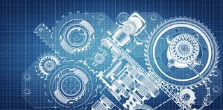

Mechanical engineering ဆိုတာ မြန်မာလိုတော့ စက်မှုနဲ့ ဆိုင်တဲ့ အင်ဂျင်နီယာပညာရပ်ပါ
စက်ပစ္စည်းများကို ဒီဇိုင်းဆွဲထုတ်လုပ်ပြီး မောင်းနှင်ပြုပြင်ထိန်းသိမ်းတာဟာ Mechanical Engineer ပါပဲ
Mechanical ဘာသာရပ်တွေ ကို အဓိကအားဖြင့် Solid ပိုင်းနဲ့ Fluid ပိုင်းဆိုပြီး ၂ ပိုင်း ခွဲချလိုက်ချင်ပါတယ်။ Solid မှာ ဆိုရင်တော့
Mechanics of materials နဲ့
Strength of materials,
Theory of machines တို့လို အခြေခံကျတဲ့ ဘာသာရပ်တွေ သင်ရပါမယ်....
ပြီးတော့ ပစ္စည်းတစ်ခုကို ဖန်တီး ထုတ်လုပ်တဲ့အခါ သွားရမဲ့ approach တွေ methodology တွေ ကို လက်တွေ့ projects တွေ နဲ့ သင်ယူရမဲ့ mechanical engineering design လို subject တွေ
Machine components တွေရဲ့ behavior တွေ, failure ဖြစ်နိုင်မဲ့ condition တွေ ကို Theory ဆန် ဆန် လေ့လာရမဲ့ vibration လို ဘာသာရပ် ၊ electronically သွားနေတဲ့ ခေတ်မှာ mechanical engineer တွေ လည်း နောက်မကျန်ခဲ့ရလေအောင် လေ့လာရဦးမဲ့ measurement and instrumentation, feedback control တို့လိုမျိုး applied engineering subject တွေ ထပ်မံသင်ကြားရမှာ ဖြစ်ပါတယ်
ဒါ့အပြင် Robotics အပိုင်းကို ဝါသနာပါတယ်ဆိုရင် elective subjects အနေနဲ့ ရွေးချယ်သင်ကြားနိုင်ပါသေးတယ်။
Automobile ပိုင်းကို စိတ်ဝင်စား တဲ့ သူတွေ အကြိုက်တွေ့စေမဲ့ Internal combustion engines လိုမျိုး ဘာသာရပ်တွေ၊
လေယာဉ်ပျံတွေ rocket တွေ ကို စိတ်ဝင်စားတဲ့ သူတွေ အတွက် Turbomachinery နဲ့ Gas Turbine Theory တို့လို ဘာသာရပ်တွေ၊ refrigeration and air condition တို့လို applied engineering ဘာသာရပ်တွေကို လေ့လာရဦးမှာပါ။
Career Path
1.Mechanical Engineering Consultant
2.Product and Material Testing Technologist
3.Drafting and Computer Graphics Engineer
4.Quality Management Engineer
5.Industrial Engineer
6.Product Engineer
7.Production Manager
8.Transportation Engineer
